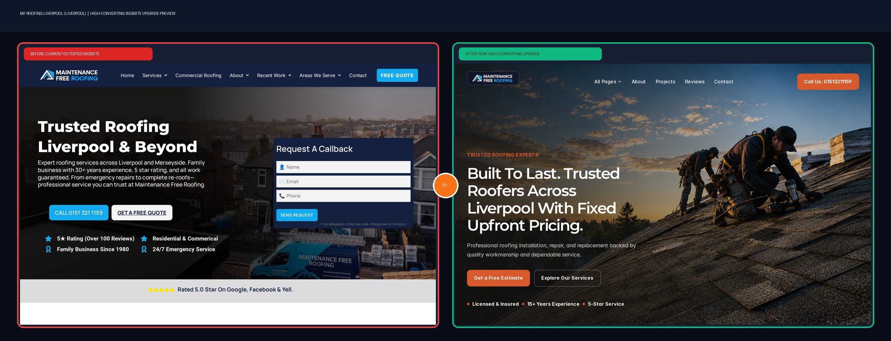

Before vs. After Upgrade Preview — Mf Roofing Liverpool
Open Current Old Website ↗
Open Full Interactive New Website →
SIDE-BY-SIDE VISUAL AUDIT (LEFT: CURRENT WEBSITE | RIGHT: NEW CUSTOM BUILD)

Click Here to Test the Full Interactive New Website →
LIVE DEMO
Prepared for Mf Roofing Liverpool
View Full New Website